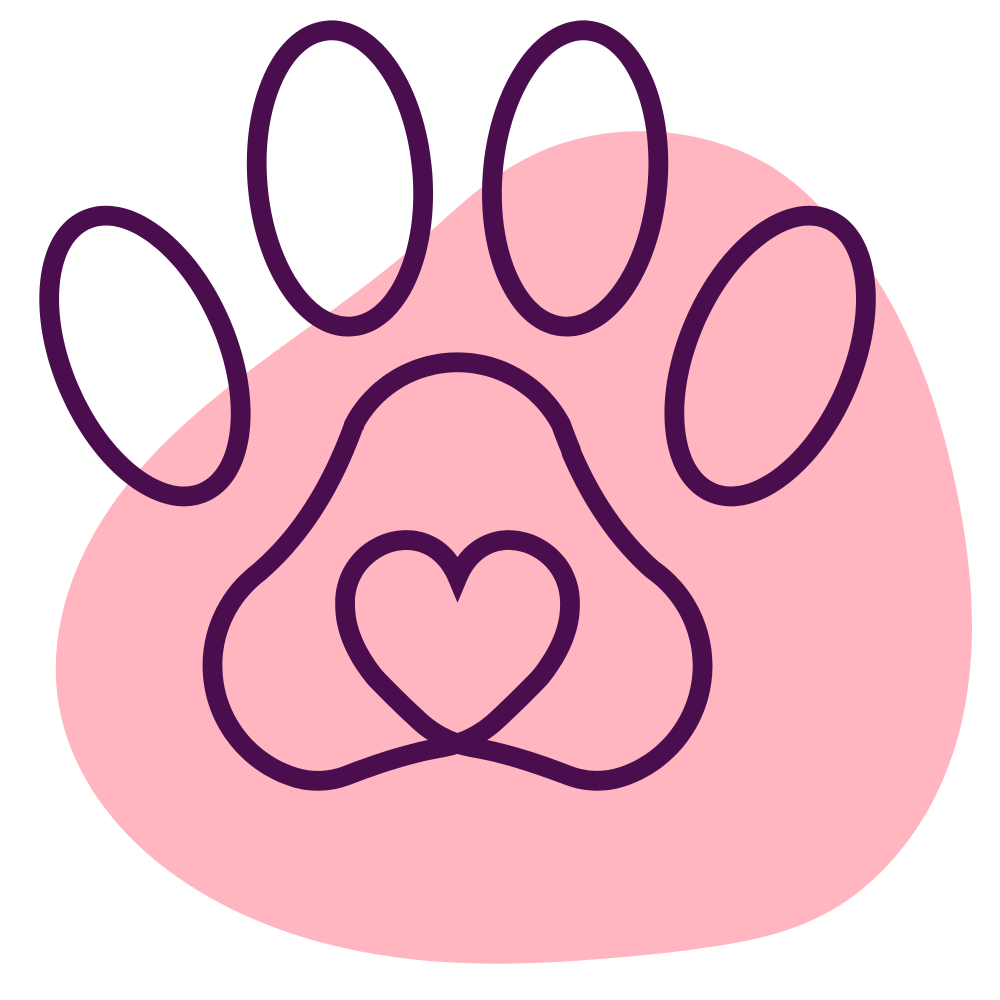
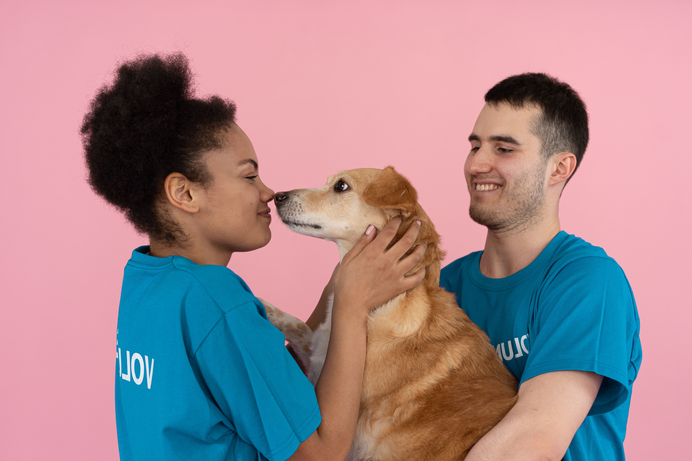

Atendimento humanizado
Cuidado que seu melhor amigo merece
Somos uma clínica veterinária e pet shop em um só lugar, com equipe especializada e um ambiente pensado para o conforto do seu pet.

Clínica & Pet-Shop
Atendimento humanizado
Somos uma clínica veterinária e pet shop em um só lugar, com equipe especializada e um ambiente pensado para o conforto do seu pet.

Tudo o que o seu pet precisa, com carinho e segurança.
Histórias reais de quem confia o pet à gente.
Levo a Mel desde filhote. A equipe trata cada pet como se fosse da própria família. Recomendo de olhos fechados!
tutora da Mel
Meu gato é super arisco e mesmo assim conseguiram fazer todos os exames com calma. Ambiente super acolhedor.
tutor do Mingau
A cirurgia do meu Thor foi um sucesso. Fui informada de tudo, em todos os momentos. Profissionais incríveis.
tutora do Thor